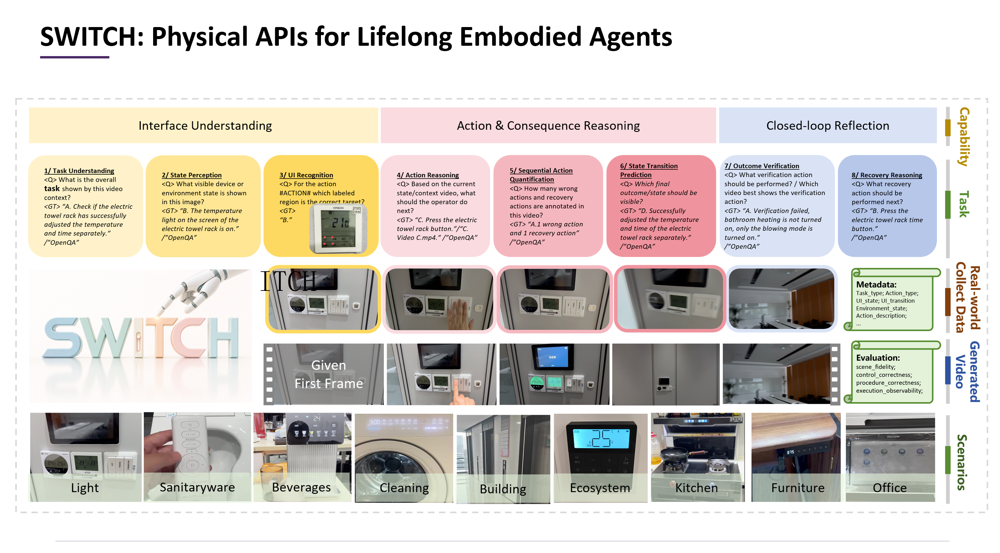
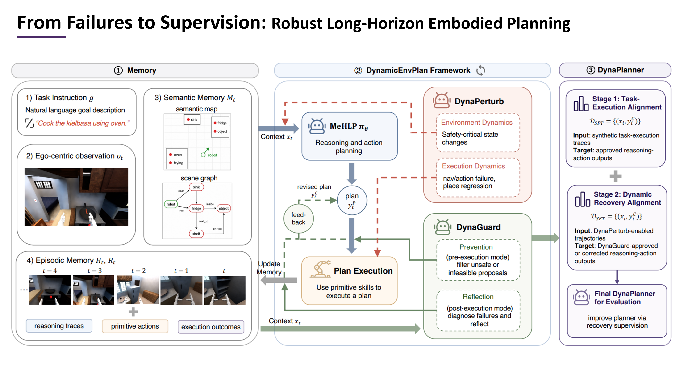
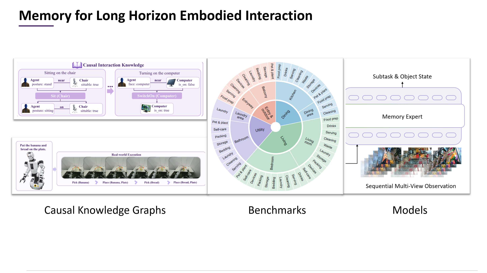
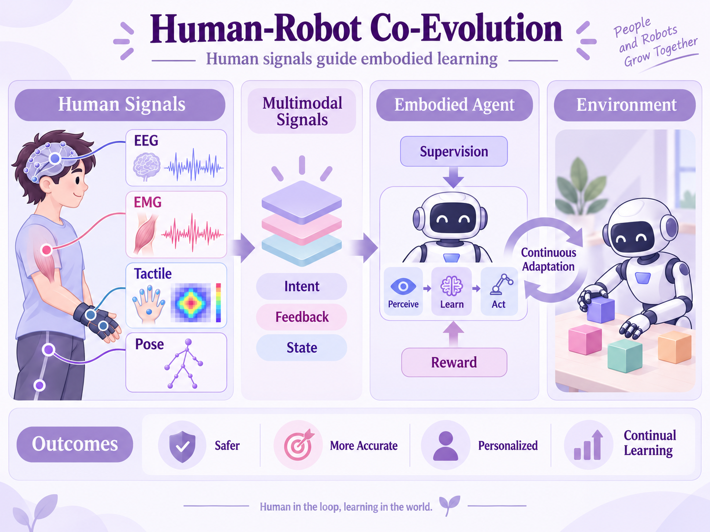
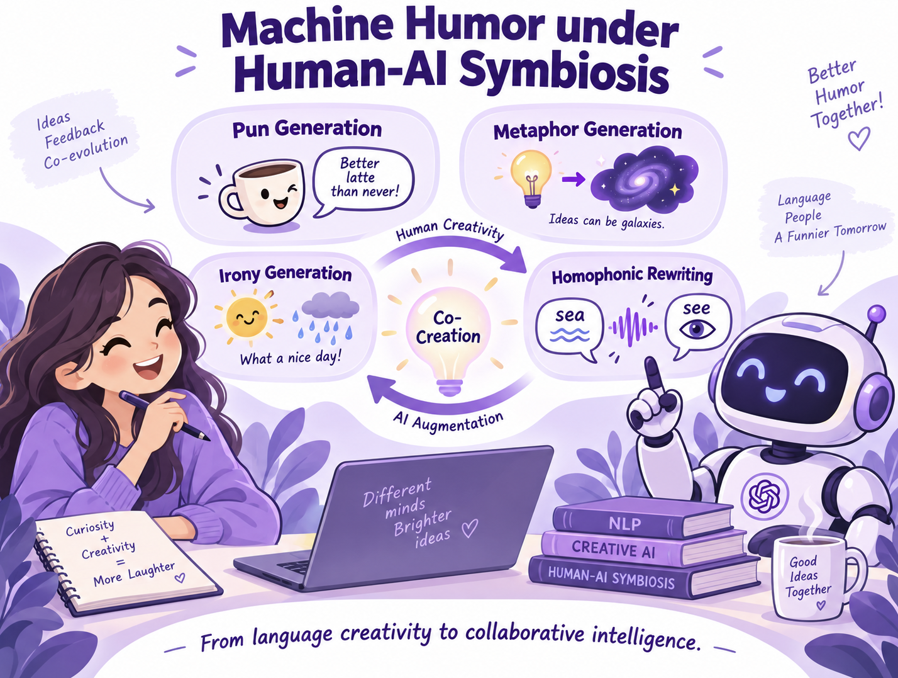

Grounding
Anchor concepts in the current world: its state, affordances, physical constraints, and causes.
Exploring the world
I design smart systems—digital or embodied—to turn real-world chaos into innovation—where AI, product, and business collide. My research interests span World Modeling, Embodied AI, and Knowledge Computing.
Previously, I graduated from AAIS and WICT at Peking University, advised by Xiaojun Wan. Then I joined MSRA as a researcher working in Chin-Yew Lin's team. During my stay in MS, I drove research on Knowledge Base and steered AI integration across flagship products such as Office, Bing and Windows.
A research practice for dynamic worlds
01 / Research interests
Evolving Intelligence for an Ever-Changing World.
Real environments do not hold still. People differ, conditions shift, feedback arrives late, and a once-valid plan can become unsafe or infeasible.
My research focuses on systems that take verifiable actions under uncertainty and continually revise themselves through interaction.
Anchor concepts in the current world: its state, affordances, physical constraints, and causes.
Turn feedback into updated beliefs, useful memory, and skills that can be reused beyond one task.
Make experience persist across tasks, time, and individuals without resetting the intelligent system.


Benchmark · Closed-loop systems · Recovery
Long-horizon interaction requires more than completing a prescribed sequence. We study how agents perceive changing state, verify consequences, recover from failure, and turn execution experience into supervision—from diagnostic benchmarks to systems that can improve over time.
Benchmarking modeling and handling of tangible interfaces in long-horizon embodied scenarios.
A closed-loop planning system that learns robust recovery from dynamic execution failures.

World state · Structured knowledge · Long-term memory
Intelligent systems need representations that preserve what has changed, explain why it changed, and retrieve the knowledge that matters now. This theme connects semantically rich world models, memory roles, and retrieval-augmented reasoning across physical and digital environments.
World representations that expose meaningful state and interaction structure for physical planning.
Evaluating how distinct memory roles shape behavior, accuracy, and personalization in agents.
Multi-grained retrieval for robust reasoning and generalization over large knowledge bases.
A modular retriever–transducer–checker framework for efficient knowledge-base reasoning.


Human signals · Machine humor · Human-centered interaction
Human–AI symbiosis connects how machines act with how they communicate. We explore human signals that guide embodied behavior, alongside humor and creative language that make digital interaction more expressive and engaging. Together, these directions bring human intent, experience, and interpretation into the design of intelligent systems.
Brain, muscle, vision, and behavior signals that connect human feedback to perception, decisions, and autonomous action in the physical world.
Generating puns through ambiguity and semantic incongruity, and exploring metaphor as a related form of creative expression—toward richer communication between people and machines.